SQL & PowerBuilder export, compare, RFC
Версия: 6.0 | Дата: 06.07.2026
📄 Скачать PDF-версию 📊 Диаграмма работы сервиса 📊 Диаграмма (PDF)
Портативный набор скриптов для экспорта объектов БД Sybase ASE 15.5 и PowerBuilder, проверки готовности к выводу в промышленную эксплуатацию, и создания задачи RFC в Jira.
Запустите главный скрипт-оркестратор. Он запросит пароль Sybase и наименование задачи, затем покажет меню:
prepare_release.bat
Или используйте графический интерфейс (рекомендуется):
powershell -ExecutionPolicy Bypass -File C:\AIS\AI\Prod\Prod-GUI.ps1
Пароль Sybase (PASSWORD) — нигде не хранится в файлах. Вводится при каждом запуске:
prepare_release.bat — при запуске-Password или интерактивный запросНаименование задачи (TaskName) — Jira-идентификатор (например, SYBASE-19337 или SUPRT-15514). Передаётся во все скрипты для логирования и создания RFC.
| Скрипт | Назначение | Параметры |
|---|---|---|
prepare_release.bat |
Главное меню — оркестратор | — (запрашивает PASSWORD и TASK_NAME) |
SQL_exp_param.bat |
Полный экспорт всех SQL-объектов с сервера | Server Database Password TaskName |
SQL_exp_single.bat |
Экспорт одного объекта по имени | Type Name Server Database Password [TaskName] |
SQL_exp_ready.bat |
Экспорт объектов из папки Ready | ReadyFolder Password [TaskName] |
Compare-Export.ps1 |
Сравнение экспортированных наборов, генерация отчёта, создание RFC | [-Password] [-TaskName] [-ShowDiff] [-CreateRFC] |
Create-RFC.ps1 |
Создание задачи RFC в Jira (проверяет дубликаты) | -TaskName [-Force] |
Find-JiraFields.ps1 |
Поиск ID пользовательских полей Jira для настройки | [-JiraUser] [-JiraPassword] |
test_sql_export.ps1 |
Автоматическая проверка экспорта (хеш, структура, кодировка) | [-Password] [-TaskName] |
Compare-PB.ps1 |
Сравнение наборов PB_Current и PB_Main (MD5) | [-ConfigPath] [-OutputFile] |
Compare-SQL.ps1 |
Сравнение Выгрузка SQLа BD/dev_golden и BD/galaxy (MD5) | [-ConfigPath] [-OutputFile] |
Prod-GUI.ps1 |
Графический интерфейс для выбора и запуска скриптов | — (интерактивный) |
VSS-Utils.ps1 |
Утилиты для работы с Microsoft Visual SourceSafe (VSS) | [-VssPath] [-Username] [-Password] |
vss.bat |
BAT-файл для быстрого доступа к командам VSS | <SSDIR> <Username> <Password> <Command> [Project] |
Settings-Module.ps1 |
Модуль управления настройками (шифрование, валидация путей, экспорт/импорт) | Build-SettingsUI, Get-MasterKey, Encrypt-Password, Decrypt-Password, Validate-AllPaths, Export-Settings, Import-Settings |
docs/service_rules/ | Файлы правил для каждого сервиса (известные ошибки, рекомендации) | — (справочные файлы для разработчика) |
Рекомендованный способ запуска. После ввода пароля и задачи показывает меню:
============================================ PREPARE RELEASE - подготовка к выводу ============================================ 1 - Сравнение PB: Current и Main 2 - Сравнение SQL: dev_golden и galaxy 3 - Сравнение и проверка (Compare && Verify) 4 - Выгрузка PB: Current или Main 5 - Выгрузка SQL: Current (dev_golden) 6 - Выгрузка SQL: Main (galaxy) 7 - Выгрузка SQL из папки Ready 8 - Создание RFC в Jira 9 - VSS: Получить последнюю версию 10 - VSS: Проверить статус 11 - VSS: Кто использует 12 - VSS: Checkout 13 - VSS: Checkin 14 - VSS: Undo Check Out 15 - Настройки параметров 16 - Запуск тестов 0 - Exit
Экспортирует все объекты указанного сервера и БД:
SQL_exp_param.bat <server> <database> <password> <task_name>
Пример:
SQL_exp_param.bat dev_golden golden PASSWORD SYBASE-19337
Создаёт структуру папок BD\<server>\<database>\Procedure\ и т.д.
syscomments.
Объекты с одинаковым именем на разных схемах (dbo, web) перезаписывают друг друга.
SQL_exp_single.bat <type> <object_name> <server> <database> <password> [task_name]
Пример:
SQL_exp_single.bat Procedure check_agent dev_golden golden PASSWORD SYBASE-19337
Типы: Procedure, Function, Trigger, Table, Index, PK, FK, Grant.
SQL_exp_ready.bat <ready_folder> <password> [task_name]
Пример:
SQL_exp_ready.bat C:\Temp\ReadyMerged\SYBASE-19337 PASSWORD SYBASE-19337
object_id().
Файл должен называться точно как объект в БД.
Структура папки Ready:
ReadyFolder\
dev_golden\
golden\
Procedure\check_agent.sql
Procedure\usp_add_entity_data.sql
Functions\fn_calc_sum.sql
Triggers\trg_after_insert.sql
powershell -ExecutionPolicy Bypass -File Compare-Export.ps1 [-Password <pass>] [-TaskName <task>] [-ShowDiff] [-CreateRFC]
| Параметр | Описание |
|---|---|
-Password | Пароль Sybase (если не указан — запросит) |
-TaskName | Идентификатор задачи Jira |
-ShowDiff | Открыть TortoiseMerge для различающихся файлов |
-CreateRFC | Принудительное создание RFC (без подтверждения) |
После проверки скрипт предлагает создать RFC в Jira, если все объекты READY.
powershell -ExecutionPolicy Bypass -File Create-RFC.ps1 -TaskName SYBASE-19337 [-Force]
Автоматически проверяет, существует ли уже RFC для данной задачи (поиск по summary, description и task_link_field). Если существует — пропускает создание.
Параметры RFC:
Скрипт для обнаружения ID пользовательских полей Jira. Необходим для настройки config.json:
powershell -ExecutionPolicy Bypass -File Find-JiraFields.ps1
Показывает все кастомные поля Jira. Найдите поля "Время начала релиза" и "Время завершения релиза" и запишите их ID в config.json.
powershell -ExecutionPolicy Bypass -File test_sql_export.ps1 [-Password <pass>] [-TaskName <task>]
Проверяет: наличие файла, заголовок CREATE, отсутствие ошибок isql, совпадение хеша, кодировку cp1251, отсутствие BOM.
Сравнивает все .sr*-файлы в PB_Current и PB_Main по MD5-хешу. Выводит сводную таблицу по библиотекам и детальный список различий. Результат также сохраняется в файл.
powershell -ExecutionPolicy Bypass -File Compare-PB.ps1 [-ConfigPath <config.json>] [-OutputFile <report.txt>]
| Статус | Значение |
|---|---|
| DIFF | Файл есть в обоих наборах, но MD5 различается |
| NOT_IN_MAIN | Файл есть в Current, отсутствует в Main (новый объект) |
| NOT_IN_CURRENT | Файл есть в Main, отсутствует в Current (удалён или не экспортирован) |
Пример отчёта на экране:
Library DIFF NOT_IN_MAIN NOT_IN_CURRENT TOTAL ====================================================================== gold_common 18 0 0 18 golden_bill 16 0 1 17 ... ====================================================================== TOTAL 227 45 27 299
Файл отчёта: C:\AIS\AI\Prod\compare_pb_report.txt (по умолчанию).
Сравнивает .sql-файлы (Procedure, Functions, Triggers) между наборами BD/dev_golden (Current) и BD/galaxy (Main) по MD5-хешу. Анализирует все общие базы данных (golden, mis и др.) и типы объектов.
powershell -ExecutionPolicy Bypass -File Compare-SQL.ps1 [-ConfigPath <config.json>] [-OutputFile <report.txt>]
Статусы: DIFF, NOT_IN_MAIN, NOT_IN_CURRENT (аналогично Compare-PB).
Пример сводки:
=== Results === DIFF: 1058 NOT_IN_MAIN: 35 NOT_IN_CURRENT: 7 TOTAL differences: 1100 By Database / Type: Database Type DIFF NOT_IN_MAIN NOT_IN_CURRENT TOTAL ======================================================================= golden Functions 3 3 0 6 golden Procedure 916 24 6 946 golden Triggers 73 8 1 82 mis Procedure 65 0 0 65 mis Triggers 1 0 0 1
Файл отчёта: C:\AIS\AI\Prod\compare_sql_report.txt (по умолчанию).
WPF-приложение с современным дизайном APPL2 для удобного выбора и запуска скриптов без командной строки. Главное окно и все диалоговые окна (ДО) выполнены в едином APPL2-стиле (см. СТАНДАРТ1).
powershell -ExecutionPolicy Bypass -File C:\AIS\AI\Prod\Prod-GUI.ps1
╔══════════════════════════════════════════════════════════════════════════════╗ ║ AIS Release Preparation ║ ║ SQL & PowerBuilder export, compare, RFC ║ ╠══════════════════════════════════════════════════════════════════════════════╣ ║ ║ ║ Operation ║ ║ ┌─────────────────────────────────────────────────────────────────────────┐ ║ ║ │ Выгрузка SQL - Current (dev_golden.golden) ▼ │ ║ ║ └─────────────────────────────────────────────────────────────────────────┘ ║ ║ ║ ║ ╔══════════════════════════════════════════════════════════════════════════╗ ║ ║ ║ [ Run ] ║ ║ ║ ╚══════════════════════════════════════════════════════════════════════════╝ ║ ║ ║ ║ ┌─ Parameters ────────────────────────────────────────────────────────────┐ │ ║ │ Server (или VSS DB Path для VSS-операций) │ │ ║ │ ┌────────────────────────────────────────────────────────────────────┐ │ │ ║ │ │ dev_golden │ │ │ ║ │ └────────────────────────────────────────────────────────────────────┘ │ │ ║ │ │ │ ║ │ Database Task Name (Jira) │ │ ║ │ ┌─────────────────────────────────────────┐ ┌────────────────────────┐ │ │ ║ │ │ golden │ │ SYBASE-19337 ▼ │ │ │ ║ │ └─────────────────────────────────────────┘ └────────────────────────┘ │ │ ║ └──────────────────────────────────────────────────────────────────────────┘ │ ║ ║ ║ ┌─ Output ────────────────────────────────────────────────────────────────┐ │ ║ │ [14:32:01] Starting: Выгрузка SQL - Current (dev_golden.golden) │ │ ║ │ [14:32:01] Please wait... │ │ ║ │ │ │ ║ └──────────────────────────────────────────────────────────────────────────┘ │ ║ ║ ║ ║ ║ [ Stop ] [Export] ║ ╚══════════════════════════════════════════════════════════════════════════════╝
| № | Операция (RusName) | Описание |
|---|---|---|
| 1 | Сравнение PB: Current и Main | Сравнение PB-объектов Current и Main (MD5) |
| 2 | Сравнение SQL: dev_golden и galaxy | Сравнение Выгрузка SQLов |
| 3 | Сравнение и проверка (Compare & Verify) | Сравнение Выгрузка SQLов, отчёт, RFC |
| 4 | Выгрузка PB: Current или Main | Выгрузка PB-объектов из PBL через pbldump |
| 5 | Выгрузка SQL: Current (dev_golden) | Полный экспорт с dev_golden.golden |
| 6 | Выгрузка SQL: Main (galaxy) | Полный экспорт с galaxy.golden |
| 7 | Выгрузка SQL из папки Ready | Экспорт объектов из папки Ready |
| 8 | Создание RFC в Jira | Создание задачи RFC в Jira |
| 9 | Комментарий в Jira: таблица объектов PB и SQL | Добавление комментария с таблицей объектов к выпуску |
| 10 | VSS: Получить последнюю версию | Обновление из VSS (один объект или все из PBT) |
| 11 | VSS: Проверить статус | Статус Checked In/Out. С TaskName — таблица всех объектов задачи |
| 12 | VSS: Кто использует | Узнать, кто извлёк объект |
| 13 | VSS: Checkout | Извлечь / Зарезервировать для Вас |
| 14 | VSS: Checkin | Сохранить / Зафиксировать изменения |
| 15 | VSS: Undo Check Out | Снять резервирование |
| 16 | Настройки параметров | Редактирование путей и параметров |
| 17 | Запуск тестов | Автотестирование проекта |
Три операции выгрузки объектов из базы данных Sybase ASE через утилиту isql:
dev_golden (рабочая версия БД). Сохраняет файлы в BD\dev_golden\golden\. Запускает скрипт SQL_exp_param.bat.galaxy (промышленная версия БД). Сохраняет в BD\galaxy\golden\. Запускает SQL_exp_param.bat.Ready_* задачи. Для каждого файла определяется тип (Procedure/Function/Trigger) и запускается isql с DDL-запросом к серверу dev_golden. Запускает SQL_exp_ready.bat.Параметры: Server, Database, Password. Пароль обязателен.
Запускаемый скрипт: Compare-Export.ps1
Назначение: проверка готовности объектов задачи к выводу в ПРОД. Сравнивает файлы из папок Ready_* задачи с эталонными копиями Current и Main, генерирует отчёт и (опционально) создаёт RFC в Jira.
Что делает:
Ready_* задачи копируются в C:\Temp\ReadyMerged\<TaskName>\. Более свежие файлы перезаписывают старые.PB_Current / BD\dev_golden) и Main (PB_Main / BD\galaxy).| Статус в ОД | Значение | Описание |
|---|---|---|
| ГОТОВО | OK | Объект есть в Current и совпадает с ним. Отличается от Main (или отсутствует в Main — новый объект). |
| НЕ ГОТОВО | НЕТ В CURRENT | Объект не найден в папке Current-экспорта. Автообновление: скрипт пытается скопировать .sr* файл из исходной папки C:\Work\gold. Если не находит — пробует PblDump.exe из PBL. |
| НЕ ГОТОВО | ОТЛИЧАЕТСЯ ОТ CURRENT | Файл в Ready отличается от файла в Current. Рекомендуется проверить различия через TortoiseMerge. |
| НЕ ГОТОВО | СОВПАДАЕТ С MAIN | Файл в Ready совпадает с Main-версией, но отличается от Current. Объект требует проверки. |
| — | НОВЫЙ ОБЪЕКТ | Отсутствует в Main-экспорте (создан впервые). Не является самостоятельной причиной "НЕ ГОТОВО", указывается дополнительно. |
.sr* файлы в C:\Work\gold. Если найдены — копирует в PB_Current и повторяет сравнение. Если не найдены — пробует PblDump.exe. Результаты повторного сравнения выводятся отдельно./base <базовый> /mine <готовый>.release_report.txt с таблицей статусов и Jira-таблицей.-CreateRFC).Параметры: Task Name (Jira) обязателен. Password для доступа к БД. Чекбоксы: Show differences (автозапуск TortoiseMerge), Create RFC (без запроса).
Создаёт задачу типа RFC в Jira, привязывая её к задаче разработки. Заполняет: название (Разработка - <название задачи>), описание, исполнителя, временное окно релиза, связь Mention с исходной задачей. Если RFC уже существует — пропускает создание. Запускает Create-RFC.ps1. Поле Task Name обязательно. Подробнее — раздел 7.
Заполняемые поля RFC:
Разработка - <название задачи из Jira>RFC сформирована автоматически - AIS Release PreparationИсправляем появившиеся ошибки и собираем новую версиюНетНетСканирует папки Ready_* указанной задачи (TaskName), собирает все объекты PowerBuilder (.sr*) и SQL (.sql), формирует таблицу в формате Jira-вики и добавляет комментарий к задаче Jira. Запускает Add-ReleaseComment.ps1. Поле Task Name обязательно. Пароль Jira вводится в поле Password (логин из config.json → jira.jira_user).
Сравнивает все .sr* файлы в папках PB_Current и PB_Main, выводит статистику различий по библиотекам (PBL). Поля пароля и сервера не требуются. Запускает Compare-PB.ps1. Подробнее — раздел 5.9.
Сравнивает SQL-файлы в BD\dev_golden\golden\ и BD\galaxy\golden\. Группирует по базе данных и типу объекта. Поля пароля и сервера не требуются. Запускает Compare-SQL.ps1. Подробнее — раздел 5.10.
Запускает test_sql_export.ps1 для проверки целостности Выгрузка SQLа: наличие обязательных объектов, корректность синтаксиса DDL. Использует переданные параметры сервера и пароля. Подробнее — раздел 5.8.
Для работы с Microsoft Visual SourceSafe (VSS) добавлены 6 операций. При выборе любой VSS-операции отображаются поля ввода:
srcsafe.ini базы данных VSSПароль VSS не вводится в операции — он задаётся один раз в панели Settings → VSS (шифруется AES-256 с мастер-ключом Windows DPAPI). Поле пароля Sybase также скрыто для VSS-операций.
Операции Checkout и Checkin дополнительно содержат поле комментария. Операции Get Latest, Check Status, Checkout, Checkin и Undo Check Out поддерживают флаг Recursive для рекурсивной обработки подпроектов.
Операция Check Status имеет поле Task Name (Jira) — при его заполнении объекты берутся из папок Ready_* задачи (исключая пустую папку Ready_), для каждого выполняется проверка статуса VSS, а результат показывается в окне с таблицей и кнопками Checkout (для свободных) и Undo Checkout (для занятых текущим пользователем). Кнопки поддерживают множественный выбор (Ctrl+Click, Shift+Click) — можно выделить несколько объектов и выполнить Checkout или Undo для всех сразу.
Поле Task Name (Jira) является редактируемым ComboBox с историей последних введённых значений (общая для всех операций). История сохраняется между сеансами, макс. количество настраивается в панели Settings.
При проверке статуса обычным способом (без TaskName) в popup-результате отображается имя пользователя, занявшего объект (например "Занят: vchaga (3)").
Операция VSS: Undo Check Out снимает резервирование объекта, возвращая его в исходное состояние без сохранения изменений. Поле комментария не требуется.
После завершения операции результат выводится в отдельном всплывающем окне в стиле APPL2 (не в области Output):
Все вспомогательные диалоговые окна переведены на APPL2-стиль (СТАНДАРТ1):
Все окна используют:
При выполнении длительных операций (особенно VSS Status с рекурсией) действует таймаут по бездействию:
gui.output_timeout_seconds в config.json (по умолчанию 60)Пример: VSS: Get Latest Version ┌─ Parameters ──────────────────────────────────────────────────────────────┐ │ VSS DB Path (srcsafe.ini) │ │ ┌────────────────────────────────────────────────────────────────────┐ │ │ │ \\server\vss\srcsafe.ini │ │ │ └────────────────────────────────────────────────────────────────────┘ │ │ VSS Username │ │ ┌────────────────────────────────────────────────────────────────────┐ │ │ │ vchaga │ │ │ └────────────────────────────────────────────────────────────────────┘ │ │ VSS Password │ │ ┌────────────────────────────────────────────────────────────────────┐ │ │ │ •••••••• │ │ │ └────────────────────────────────────────────────────────────────────┘ │ │ VSS Project ($/) │ │ ┌────────────────────────────────────────────────────────────────────┐ │ │ │ $/AIS/Release │ │ │ └────────────────────────────────────────────────────────────────────┘ │ │ ☑ Recursive │ └────────────────────────────────────────────────────────────────────────────┘
При указании объекта VSS можно использовать два формата:
$/, включает проект, папку и имя файла с расширением.PB_Main или PB_Current и построит полный путь.$/SRC125/папка/файл.расширение$/SRC125/golden_collection/d_dvou2020_rep_data.srd
d_dvou2020_rep_data.srd или d_dvou2020_rep_data
| Формат | Пример | Описание |
|---|---|---|
| Полный путь | $/SRC125/golden_collection/d_dvou2020_rep_data.srd | Полный путь VSS, начинается с $/ |
| Краткий (с расширением) | d_dvou2020_rep_data.srd | Только имя файла, GUI найдёт PBL и построит путь |
| Краткий (без расширения) | d_dvou2020_rep_data | Имя без расширения, GUI найдёт файл и возьмёт его расширение |
PB_Main и PB_Current (рекурсивно)$/SRC125/gold/<pbl_name>/<file_name>$/) — используется как естьСтруктура пути:
$/SRC125/ ← корневой проект VSS
├── golden_collection/ ← папка в проекте (PBL name)
│ ├── d_dvou2020_rep_data.srd ← файл отчёта
│ ├── d_agent_data.sru ← объект PowerBuilder
│ └── ...
└── other_folder/
└── ...
Структура пути:
$/SRC125/ ← корневой проект VSS
├── golden_collection/ ← папка в проекте
│ ├── d_dvou2020_rep_data.srd ← файл отчёта
│ ├── d_agent_data.sru ← объект PowerBuilder
│ └── ...
└── other_folder/
└── ...
Распространённые расширения объектов VSS:
.srd — DataWindow (отчёт).sru — UserObject.srw — Window.srm — Menu.srp — Picture.pbl — PowerBuilder LibraryПоле пароля отображается только для операций, требующих подключения к БД Sybase (Выгрузка SQL, Compare & Verify, Run Tests). Для VSS-операций пароль берётся из Settings (зашифрован в config.json). Поддерживает скрытие/отображение текста:
Скрытый вид (по умолчанию): Отображаемый вид: ┌──────────────────────────────────┐ ┌──────────────────────────────────┐ │ •••••••• [Show]│ │ MySecretPass123 [Hide]│ └──────────────────────────────────┘ └──────────────────────────────────┘
При выборе операции "Compare & Verify" появляются дополнительные чекбоксы:
┌─ Parameters ──────────────────────────────────────────────────────────────┐ │ Task Name (Jira) │ │ ┌────────────────────────────────────────────────────────────────────┐ │ │ │ SYBASE-19337 │ │ │ └────────────────────────────────────────────────────────────────────┘ │ │ │ │ ☑ Show differences (TortoiseMerge) ☐ Create RFC in Jira │ └────────────────────────────────────────────────────────────────────────────┘
Скрипты запускаются в фоновом режиме. Во время выполнения:
Рисунок 1. Главное окно GUI с выбранной операцией "Выгрузка SQL - Current"
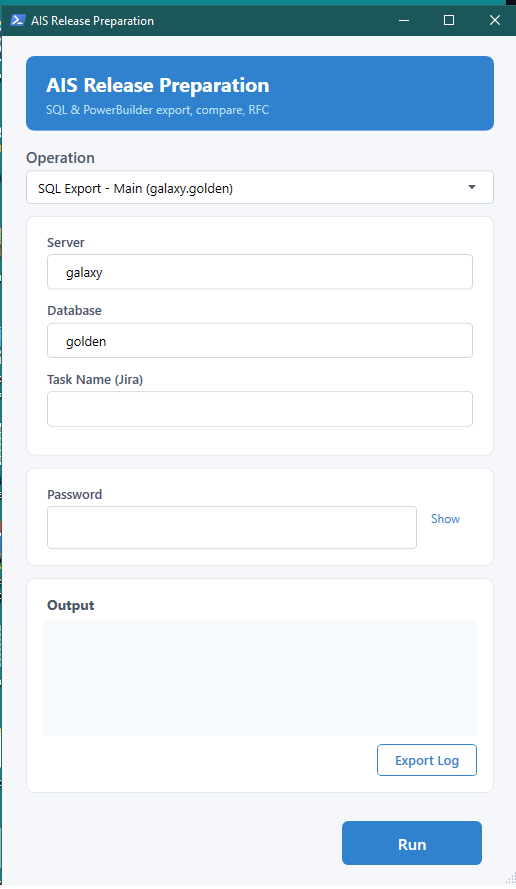
Рисунок 2. Поле пароля в режиме "Show" (текст виден)
Рисунок 3. Поле пароля в режиме "Hide" (текст скрыт)
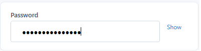
Рисунок 4. Операция "Compare & Verify" с чекбоксами опций
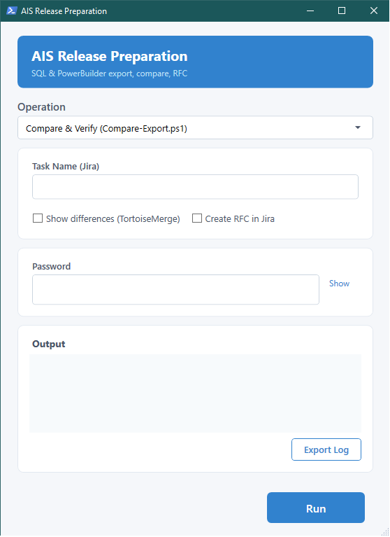
Рисунок 5. Окно во время выполнения скрипта с выводом в реальном времени
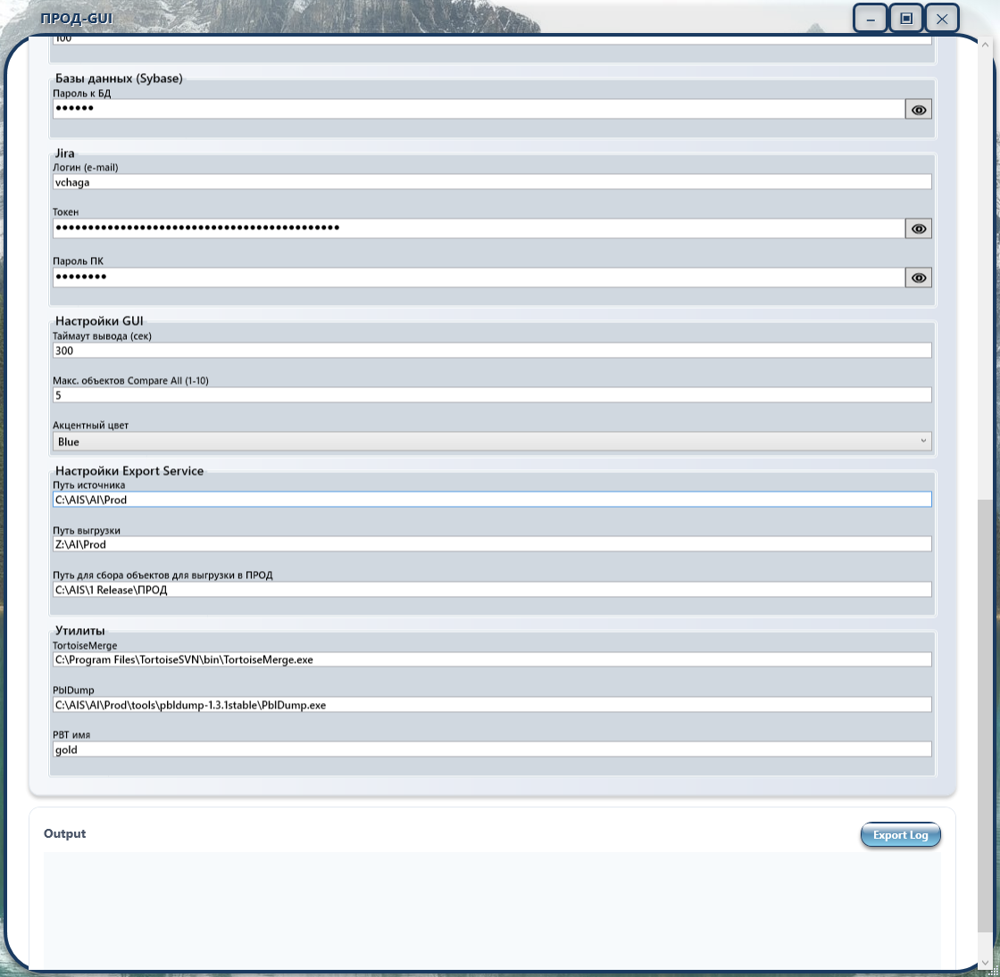
Рисунок 6. Главное окно GUI с выбранной операцией и панелью параметров
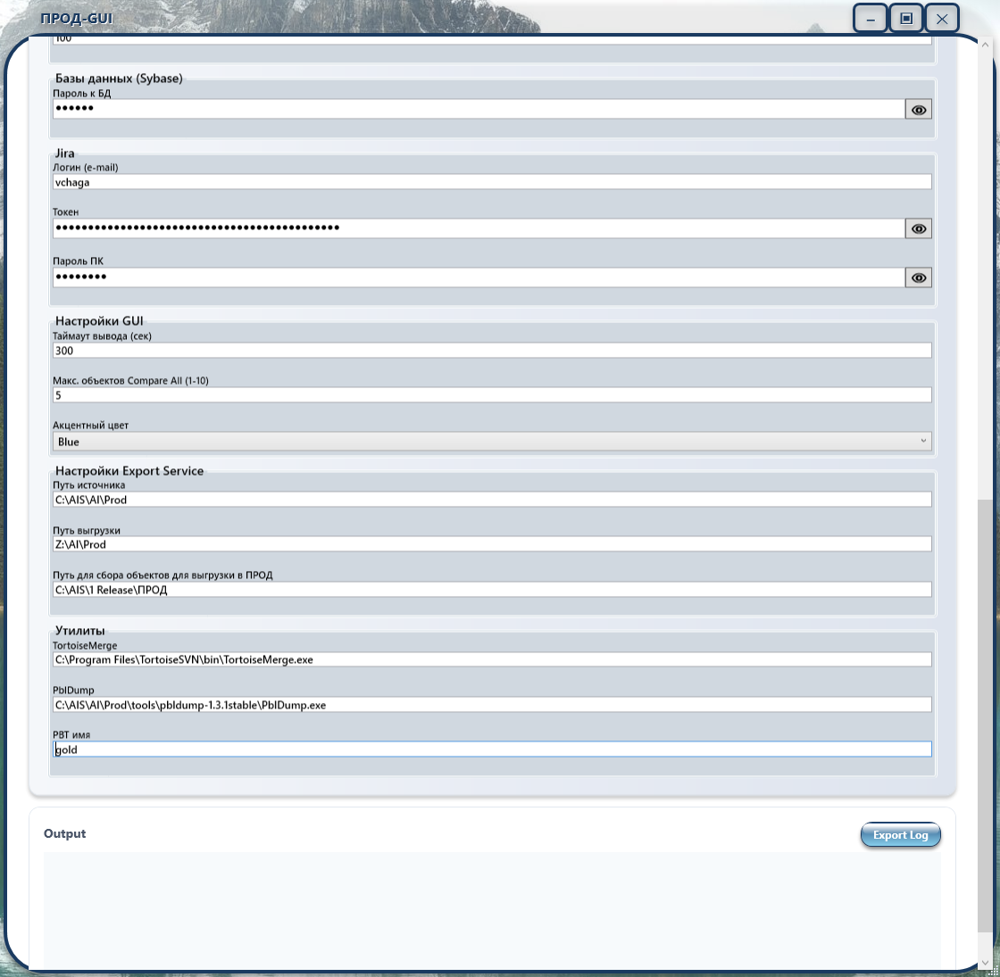
Рисунок 7. VSS-операции в GUI — "VSS: Get Latest Version" с полями подключения к VSS
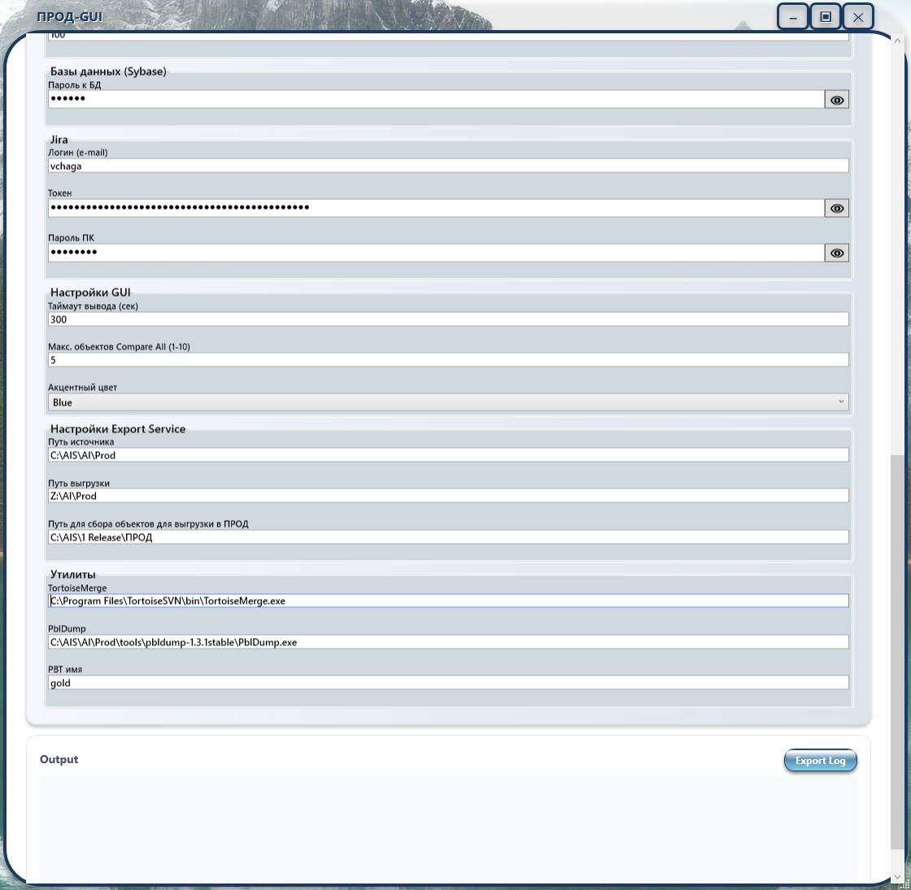
Рисунок 8. Окно VSS Статус с таблицей объектов из папок Ready_* задачи. Кнопки Checkout/Undo поддерживают множественный выбор (Ctrl+Click)
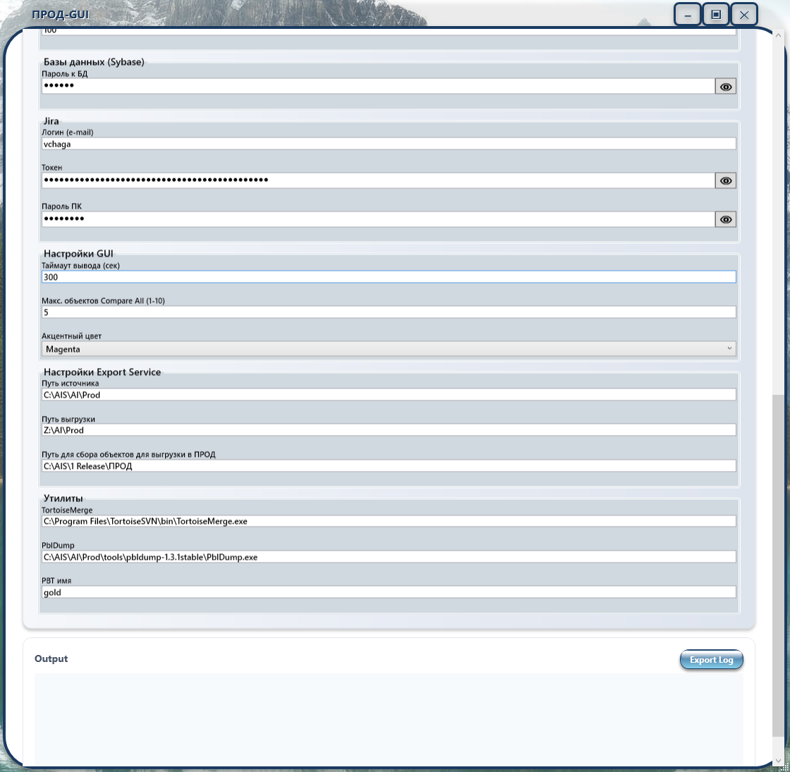
docs/renins_logo.png).
Цветовая схема интерфейса: синий (#3182CE) для кнопок и header, светло-серый (#F5F7FA) для фона.
Все диалоговые окна (ДО) сервиса выполнены в едином стиле СТАНДАРТ1 на основе APPL2-шаблона с двухслойным 3D-эффектом текста, кастомным title bar и скруглёнными углами. Ниже приведены скриншоты ключевых окон:
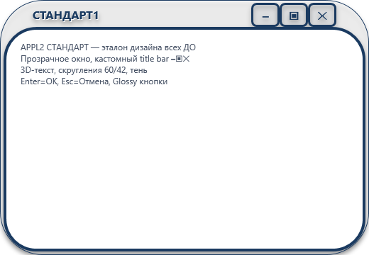
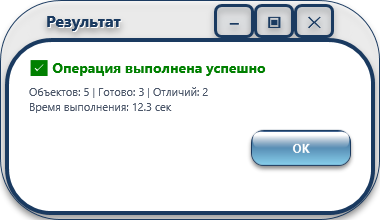
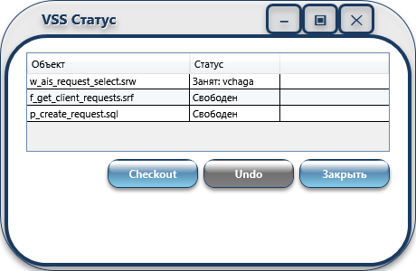
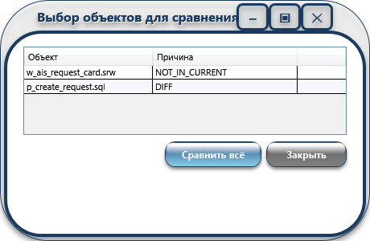
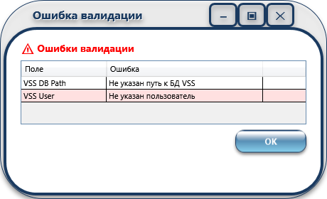
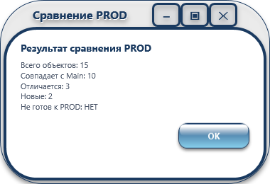
PowerShell модуль для интеграции с Microsoft Visual SourceSafe (VSS) — системой контроля версий.
C:\Program Files (x86)\Microsoft Visual SourceSafe\)powershell -ExecutionPolicy Bypass -File VSS-Utils.ps1 -VssPath "\\server\vss\srcsafe.ini" -Username "user" -Password "pass"
| Функция | Назначение | Пример |
|---|---|---|
Get-VssLatest |
Получить последнюю версию из VSS | Get-VssLatest -Project "$/AIS/Current" |
Get-VssStatus |
Узнать состояние объектов (Checked In/Out) | Get-VssStatus -Project "$/AIS/Current" |
Get-VssWhoIsUsing |
Узнать кто использует объект | Get-VssWhoIsUsing -Project "$/AIS/Current/golden_bill.pbl" |
Set-VssCheckout |
Выполнить Check Out объекта | Set-VssCheckout -Project "$/AIS/Current/golden_bill.pbl" -Comment "Editing for release" |
Set-VssCheckin |
Выполнить Check In объекта | Set-VssCheckin -Project "$/AIS/Current/golden_bill.pbl" -Comment "Release preparation" |
Set-VssUndoCheckout |
Отменить Check Out (снять резервирование) | Set-VssUndoCheckout -Project "$/AIS/Current/golden_bill.pbl" |
vss.bat <SSDIR> <Username> <Password> <Command> [Project] [Comment]
Примеры:
REM Получить последнюю версию vss.bat "\\server\vss\srcsafe.ini" user pass get $/AIS/Current REM Проверить статус vss.bat "\\server\vss\srcsafe.ini" user pass status $/AIS/Current REM Узнать кто использует файл vss.bat "\\server\vss\srcsafe.ini" user pass who $/AIS/Current/golden_bill.pbl REM Выполнить Check Out vss.bat "\\server\vss\srcsafe.ini" user pass checkout $/AIS/Current/golden_bill.pbl "Editing" REM Выполнить Check In vss.bat "\\server\vss\srcsafe.ini" user pass checkin $/AIS/Current/golden_bill.pbl "Done" REM Отменить Check Out vss.bat "\\server\vss\srcsafe.ini" user pass undocheckout $/AIS/Current/golden_bill.pbl
Сценарий 1: Обновление рабочего набора из VSS
# Загрузить последние версии всех объектов Get-VssLatest -Project "$/AIS/Current" # Проверить статус после обновления Get-VssStatus -Project "$/AIS/Current"
Сценарий 2: Подготовка объекта к редактированию
# Узнать кто использует объект Get-VssWhoIsUsing -Project "$/AIS/Current/golden_bill.pbl" # Если свободен — выполнить Check Out Set-VssCheckout -Project "$/AIS/Current/golden_bill.pbl" -Comment "Release preparation SYBASE-19337" # ... редактирование ... # Вернуть в VSS Set-VssCheckin -Project "$/AIS/Current/golden_bill.pbl" -Comment "Completed SYBASE-19337"
Сценарий 3: Отмена изменений — Undo Checkout
# Отменить Check Out (снять резервирование, вернуть как было) Set-VssUndoCheckout -Project "$/AIS/Current/golden_bill.pbl"
Операция "Настройки параметров" (индекс 0) открывает панель управления конфигурацией проекта прямо в GUI. Панель позволяет просматривать и редактировать все параметры из config.json без ручного редактирования файла.
config.json с шифрованием пароля VSSПароль VSS шифруется алгоритмом AES-256 с использованием мастер-ключа, защищённого Windows DPAPI (Data Protection API). Мастер-ключ уникален для каждого пользователя и компьютера. При первом открытии панели настроек мастер-ключ создаётся автоматически.
password_encrypted)Кнопка "Проверить пути" анализирует каждый путь из конфигурации и показывает статус:
Все изменения настроек записываются в config/settings_history.json (до 50 последних записей) с указанием даты, параметра, старого и нового значения.
Рисунок 10. Панель настроек с заполненными полями и результатами валидации путей
Скрипт сканирует папки Ready_* указанной задачи Jira (-TaskName SYBASE-xxxxx), собирает все объекты PowerBuilder (.sr*) и SQL (.sql) из latest-версий папок Ready, и добавляет комментарий к задаче Jira с таблицей этих объектов в формате Jira-вики.
Параметры:
-TaskName — обязательный, задача Jira (например SYBASE-19337)-JiraUser — логин Jira (по умолчанию из config.json → jira.jira_user)-JiraPassword — пароль/токен Jira (будет запрошен, если не указан)-Force — без подтвержденияФормат таблицы в комментарии:
h3. Состав релиза по задаче SYBASE-19337 ||Тип||Объект||Статус|| |PowerBuilder|w_ais_request_select|Готов| |PowerBuilder|u_ais_calc|Готов| |SQL|sp_ais_calc|Готов| Всего: 3 объектов (PB: 2, SQL: 1)
Запуск из GUI: операция «Комментарий в Jira: таблица объектов PB и SQL» в комбобоксе. Поле Task Name — общий ComboBox с историей. Пароль Jira вводится в поле Password главного окна.
Окно просмотра и переключения моделей ИИ. Две вкладки: «Доступные» (только работающие модели) и «Все модели» (все модели со статусами). Позволяет переключить активную модель в opencode.jsonc.
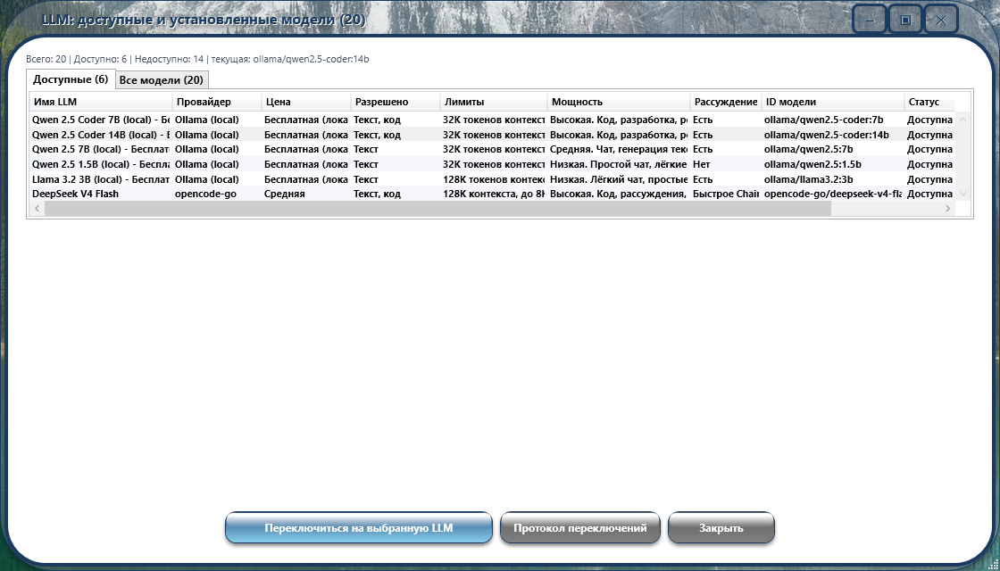
Рисунок 9. Окно LLM: выбор и переключение модели ИИ
Окно управления статусами EDIT/FIXED для всех объектов проекта (ОП и ДО). Таблица со колонками ID, Тип, Имя, Статус. Кнопки FIX/EDIT/Сохранить/История. Кнопка «История» показывает лог изменений статусов. При сохранении FIXED-объектов автоматически архивируется проект.
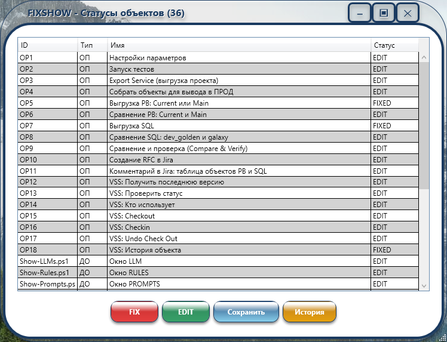
Рисунок 11. Окно FIXSHOW: управление статусами EDIT/FIXED
Окно просмотра истории пользовательских промптов, сохранённых плагином save-prompts.js. Поиск по тексту с подсветкой. Формат: дата, время, модель, промпт.
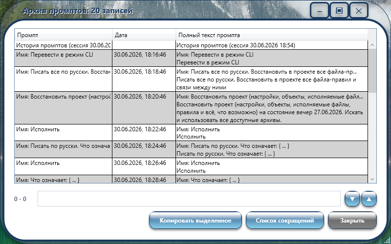
Рисунок 12. Окно истории промптов (ПРОМПТ)
Окно со сводом всех сокращений проекта. Разделено на вкладки: Каталоги, Серверы и БД, Типы объектов, Статусы, Утилиты, VSS команды, Файлы, Команды.
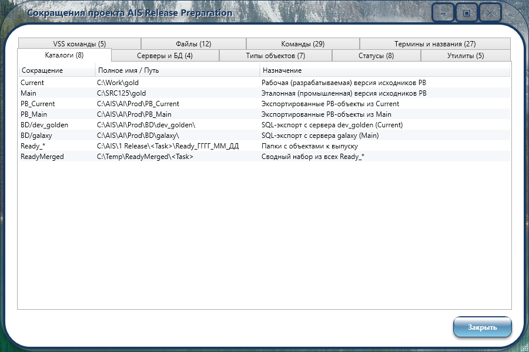
Рисунок 13. Окно сокращений (СОКР)
Окно просмотра и редактирования файлов-правил проекта. Поддержка вкладок и подвкладок, поиск контекста с подсветкой, редактирование текста с автосохранением.
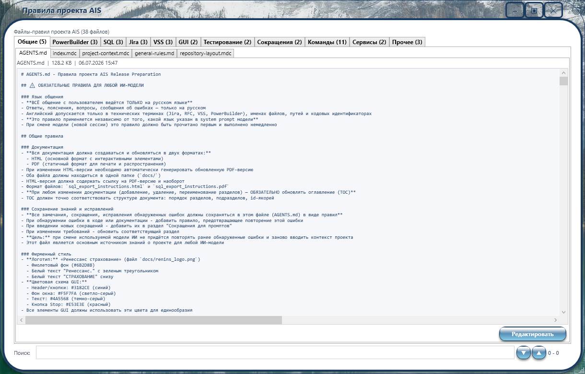
Рисунок 14. Окно правил (RULES)
Назначение: Просмотр истории версий VSS для выбранного объекта PowerBuilder.
Запуск: Из GUI (Prod-GUI.ps1), выбрав операцию «VSS: История объекта» (ОП 18).
Параметры:
$/SRC125/gold/golden_sprw/w_sprw_all.srw) или короткое имя (библиотека определяется автоматически)Основные возможности:
1. Просмотр истории
После выбора объекта загружается таблица со всеми версиями VSS (до 81 записи). Колонки:
2. Поиск контекста в версиях
В верхней части окна расположена строка поиска:
3. Сравнение двух версий (TortoiseMerge)
Чтобы сравнить две версии объекта:
Примечание: Для работы сравнения требуется установленный TortoiseSVN (TortoiseMerge.exe в C:\Program Files\TortoiseSVN\bin\).
Пример использования:
w_sprw_all и нажмите «Показать историю»Чага и нажмите Enter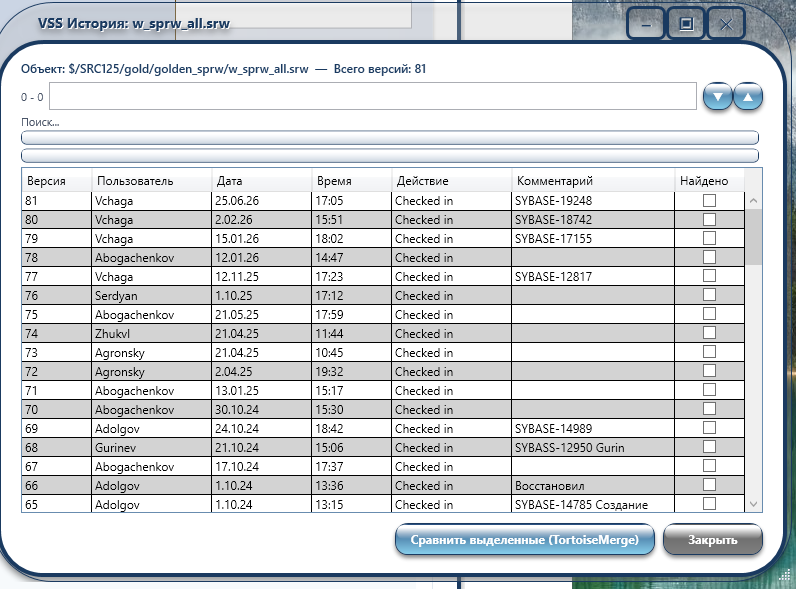
Рисунок 15. Окно VSS: История объекта
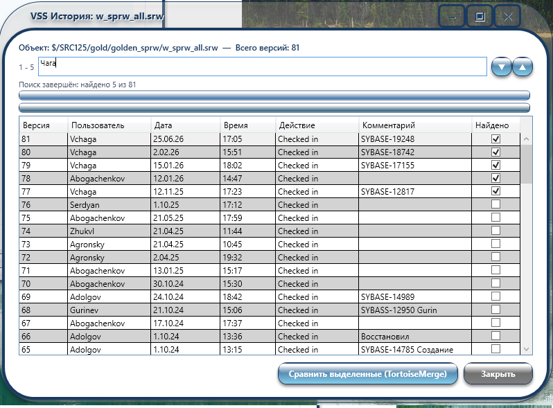
Рисунок 16. Результат поиска контекста в VSS History (галочки в колонке «Найдено»)
{
"_version": "4.0 - Портативная версия с шифрованием",
"paths": {
"pb_main_source": "C:\\SRC125\\gold",
"pb_current_source": "C:\\Work\\gold",
"pb_main_export": "C:\\AIS\\AI\\Prod\\PB_Main",
"pb_current_export": "C:\\AIS\\AI\\Prod\\PB_Current",
"bd_current_server": "dev_golden",
"bd_main_server": "galaxy",
"bd_database": "golden",
...
},
"vss": {
"user": "vchaga",
"password_encrypted": "<AES-256 зашифрованная строка>",
"master_key_encrypted": "<DPAPI-защищённый мастер-ключ>",
"db_path": "\\\\ren-msksf01\\VSS2005\\srcsafe.ini",
"project": "$/SRC125",
"ss_exe": "C:\\Program Files (x86)\\Microsoft Visual SourceSafe\\ss.exe"
},
"jira": {
"base_url": "https://mytask.renins.com",
"project_key": "RFC",
"issue_type": "RFC",
"custom_fields": { ... }
},
"log": { "dir": ".\\reports\\logs", "archive_enabled": true, "gui_debug": true },
"gui": { "default_task": "", "auto_english_layout": true, "output_timeout_seconds": 60 },
"custom": { }
}
Автоматически ведётся при сохранении настроек через панель Settings. Хранит до 50 записей с указанием даты, параметра, старого и нового значения.
Хранит последние введённые объекты VSS для каждой операции (ComboBox с историей). Количество сохраняемых объектов настраивается через поле vss.history_max в config.json или в панели Settings → VSS → "История: макс. объектов" (по умолчанию 100). Пароли не сохраняются.
Для определения ID custom fields запустите Find-JiraFields.ps1 и обновите секцию jira в config.json:
{
"jira": {
"base_url": "https://mytask.renins.com",
"project_key": "RFC",
"issue_type": "RFC",
"custom_fields": {
"release_start": "customfield_XXXXX",
"release_end": "customfield_XXXXX",
"task_ref_field":"customfield_XXXXX"
},
"task_link_field": "customfield_XXXXX"
}
}
Compare-Export.ps1 после проверки объектов:Create-RFC.ps1-CreateRFC — RFC создаётся без подтвержденияCreate-RFC.ps1 ищет существующие RFC по задаче:| Поле | Значение |
|---|---|
| Summary | Разработка - <название задачи из Jira> |
| Description | RFC сформирована автоматически - AIS Release Preparation |
| Исполнитель (assignee) | Текущий пользователь |
| План проведения работ (25953) | 8 шагов стандартной процедуры |
| План отката (25954) | Исправляем появившиеся ошибки и собираем новую версию |
| Проблемы и риски (13852) | Нет |
| Информирование о недоступности (15254) | Нет |
| Ответственный за релиз (15255) | Текущий пользователь |
| Эксперт по продукту (15256) | Текущий пользователь |
| Проверяющие на бою (15350) | Автор исходной задачи (reporter) |
| Системы (25955, 26053) | SYSTEM-67 |
| Связь с задачей | Тип Mention (inwardIssue=RFC, outwardIssue=TaskName) |
Все экспортируемые SQL-файлы — Windows-1251 (ANSI). Документация — UTF-8.
| Проблема | Причина | Решение |
|---|---|---|
| isql: command not found | isql не в PATH | Добавить %SYBASE%\OCS-15_0\bin в PATH |
| Синтаксическая ошибка: order | Имя файла не совпадает с именем объекта в БД | Переименовать файл в точное имя объекта |
| Jira API error 401 | Неверные учётные данные Jira | Проверить логин и пароль/API токен |
| RFC not created — already exists | Для задачи уже есть RFC | Проверить в Jira; если нужно — создать вручную |
| customfield_XXXXX не найден | Не настроены ID полей в config.json | Запустить Find-JiraFields.ps1 |
REM Шаг 1: Запустить оркестратор prepare_release.bat REM --- ввести пароль и SYBASE-19337 --- REM Шаг 2: Полный экспорт Current (пункт 1 меню) REM Шаг 3: Полный экспорт Main (пункт 2 меню) REM Шаг 4: Сравнить и проверить (пункт 4 меню) REM Шаг 5: Если всё READY — подтвердить создание RFC REM Шаг 6: RFC создан в Jira
| Сокращение | Полное имя / Путь | Назначение |
|---|---|---|
| Current | C:\Work\gold |
Рабочая (разрабатываемая) версия исходников PB |
| Main | C:\SRC125\gold |
Эталонная (промышленная) версия исходников PB, синхронизированная с VSS |
| PB_Current | C:\AIS\AI\Prod\PB_Current |
Экспортированные PB-объекты из Current (PBL → .sru/.srw) |
| PB_Main | C:\AIS\AI\Prod\PB_Main |
Экспортированные PB-объекты из Main (эталон) |
| BD/dev_golden | C:\AIS\AI\Prod\BD\dev_golden\ |
Выгрузка SQL с сервера dev_golden (Current, разрабатываемая БД) |
| BD/galaxy | C:\AIS\AI\Prod\BD\galaxy\ |
Выгрузка SQL с сервера galaxy (Main, промышленная БД) |
| Ready_* | C:\AIS\1 Release\<Task>\Ready_ГГГГ_ММ_ДД |
Папки с объектами, подготовленными к выпуску (могут быть несколько). Папка Ready_ (без даты) — эталонный шаблон, не обрабатывается |
| ReadyMerged | C:\Temp\ReadyMerged\<Task> |
Сводный набор из всех Ready_* (самые свежие версии) |
| Имя | Тип | Назначение |
|---|---|---|
| dev_golden | Сервер Sybase ASE | Разрабатываемая БД (Current) |
| galaxy | Сервер Sybase ASE | Промышленная БД (Main) |
| golden | База данных | Имя БД на обоих серверах |
| vchaga | Пользователь Sybase | Учётная запись для подключения isql |
| Тип | Расширение | Описание |
|---|---|---|
| PBL | .pbl |
PowerBuilder Library — библиотека PB-объектов |
| PBT | .pbt |
PowerBuilder Target — файл со списком PBL проекта |
| SRU / SRW / ... | .sr* |
Экспортированные PB-объекты (user object, window, и т.д.) |
| Procedure | .sql |
Хранимая процедура Sybase ASE |
| Functions | .sql |
Функция Sybase ASE |
| Triggers | .sql |
Триггер Sybase ASE |
| AIS | — | Наименование проекта PowerBuilder / Jira project |
| Статус | Значение |
|---|---|
| READY | Объект готов к выводу в ПРОД (совпадает с Current, отличается от Main) |
| NOT_READY | Объект НЕ готов (общая категория) |
| NOT_IN_CURRENT | Объект отсутствует в Current — не найден в экспорте разрабатываемой БД |
| DIFF_CURRENT | Объект в Ready отличается от соответствующего объекта в Current |
| NEW_OBJECT | Новый объект — отсутствует в Main (промышленной БД) |
| SAME_AS_MAIN | Объект совпадает с Main — изменений нет, вывод в ПРОД не требуется |
| DIFF | Объекты различаются (PB: Compare-PB.ps1 / SQL: Compare-SQL.ps1) |
| NOT_IN_MAIN | Объект есть в Current, отсутствует в Main (новый/добавленный) |
| NOT_IN_CURRENT | Объект есть в Main, отсутствует в Current (удалён или не экспортирован) |
| Утилита | Назначение |
|---|---|
| isql | Командная утилита Sybase ASE для выполнения SQL-запросов (%SYBASE%\OCS-15_0\bin) |
| pbldump | Сторонняя утилита для экспорта объектов из PBL-файлов в .sr*-файлы |
| TortoiseMerge | Утилита визуального сравнения файлов (из состава TortoiseSVN) |
| Файл | Назначение |
|---|---|
config.json | Конфигурация путей, Jira-подключения |
Task.txt | Методика и план подготовки и проверки объектов |
release_report.txt | Генерируемый отчёт проверки (JIRA-совместимая таблица) |
compare_pb_report.txt | Отчёт сравнения PB_CurrentиPB_Main (Compare-PB.ps1) |
compare_sql_report.txt | Отчёт сравнения BD/dev_goldenиBD/galaxy (Compare-SQL.ps1) |
Prod-GUI.ps1 | Графический интерфейс для запуска скриптов |
Initialize-Project.ps1 | Скрипт инициализации портативного проекта |
VSS-Utils.ps1 | Утилиты для работы с VSS |
Settings-Module.ps1 | Модуль управления настройками (шифрование, валидация) |
settings_history.json | Журнал изменений настроек (до 50 записей) |
vss_object_history.json | История объектов VSS (до 100 записей на операцию) |
Проект организован в виде портативного пакета со следующей структурой:
AIS_Release_Preparation/ ├── bin/ # Исполняемые файлы (BAT) │ ├── Prod-GUI.bat # Запуск GUI │ ├── prepare_release.bat # Главный оркестратор │ ├── SQL_exp_param.bat # Полный Выгрузка SQL │ └── ... ├── scripts/ # PowerShell скрипты │ ├── Prod-GUI.ps1 # GUI приложение │ ├── Compare-Export.ps1 # Сравнение и RFC │ ├── Compare-PB.ps1 # Сравнение PB │ ├── Compare-SQL.ps1 # Сравнение SQL │ ├── Initialize-Project.ps1 # Инициализация │ └── ... ├── config/ # Конфигурация │ ├── config.json # Основные настройки │ └── Task.txt # Методика и план работ ├── docs/ # Документация │ ├── sql_export_instructions.html │ ├── sql_export_instructions.pdf │ └── screenshots/ ├── reports/ # Отчеты (генерируются) ├── temp/ # Временные файлы ├── BD/ # Выгрузка SQLы (создается) ├── PB_Current/ # PB-экспорт Current (создается) └── PB_Main/ # PB-экспорт Main (создается)
Шаг 1: Копирование папки
Скопируйте всю папку проекта в новое расположение:
xcopy "C:\AIS\AI\Prod" "D:\NewProject\AIS_Release" /E /I
Шаг 2: Инициализация
Запустите скрипт инициализации для настройки путей:
cd D:\NewProject\AIS_Release powershell -ExecutionPolicy Bypass -File scripts\Initialize-Project.ps1
Шаг 3: Настройка конфигурации
Отредактируйте config\config.json:
Шаг 4: Проверка зависимостей
Убедитесь, что установлены необходимые компоненты:
| Компонент | Версия | Назначение |
|---|---|---|
| Windows | 10/11 | Операционная система |
| PowerShell | 5.1+ | Выполнение скриптов |
| Sybase ASE Client | 15.5+ | Работа с БД (isql) |
| PowerBuilder | 12.5 | Экспорт PB-объектов (pbldump) |
| Microsoft VSS | 8.0 | Контроль версий (опционально) |
| Google Chrome | Любой | Генерация PDF из HTML |
Шаг 5: Тестирование
bin\Prod-GUI.bat
Выберите операцию "Run Tests" и введите тестовые данные для проверки работоспособности.
Если нужен только определенный функционал, можно скопировать только соответствующие файлы:
Только сравнение PB:
scripts\Compare-PB.ps1 config\config.json
Только сравнение SQL:
scripts\Compare-SQL.ps1 config\config.json
Только создание RFC:
scripts\Create-RFC.ps1 scripts\Find-JiraFields.ps1 config\config.json
Только GUI:
bin\Prod-GUI.bat scripts\Prod-GUI.ps1 config\config.json
Скрипты используют следующие переменные окружения:
| Переменная | Описание | Пример |
|---|---|---|
SYBASE | Путь к установке Sybase | C:\Sybase |
SSDIR | Путь к базе данных VSS | \\server\vss |
Все скрипты записывают логи в:
%TEMP%\ais_gui_debug.logreports/Для наглядного представления архитектуры, потоков данных и процессов сервиса подготовлен отдельный документ с интерактивными диаграммами. Документ содержит 9 разделов с 7 разными типами диаграмм Mermaid.
| № | Раздел | Тип диаграммы | Что показывает |
|---|---|---|---|
| 1 | Архитектура сервиса | C4 Container |
Компоненты сервиса (GUI, скрипты, BAT, config.json) и их связи с внешними системами (Sybase ASE, PblDump, VSS, Jira, TortoiseMerge). Использование: для понимания общей структуры и зависимостей — какие утилиты вызываются каждым компонентом, где хранятся настройки и пароли. |
| 2 | Потоки данных между каталогами | ER-диаграмма |
Связи между источниками (Work\gold, SRC125\gold, dev_golden, galaxy, VSS),
экспортами (PB_Current, PB_Main, BD\...) и папками задач (Ready_*, ReadyMerged). Использование: для трассировки пути объекта от исходного кода до отчёта — откуда берётся файл, куда экспортируется, с чем сравнивается. |
| 3 | Типовой маршрут подготовки релиза | Диаграмма Ганта |
Последовательность этапов: Настройки → VSS Get Latest → Экспорт PB/SQL →
Размещение в Ready → Compare & Verify → RFC → Комментарий Jira. Использование: для планирования очередности операций и оценки времени — какие шаги можно делать параллельно (экспорты), какие строго последовательны. |
| 4 | Распределение операций по категориям | Круговая диаграмма (Pie) |
18 операций GUI, сгруппированных по 6 категориям: Экспорт (4), Сравнение (3),
VSS (6), Jira (2), Утилиты (2), Настройки (1). Использование: для быстрой оценки функционального покрытия сервиса — какая доля операций приходится на каждую категорию. |
| 5 | Зависимости между операциями | Диаграмма классов |
Какие операции должны быть выполнены до запуска других. Settings — обязательный
первый шаг. Экспорт должен предшествовать сравнению. Compare & Verify →
Create RFC → Release Comment. Использование: для определения порядка запуска — нельзя сравнивать объекты, не экспортировав их предварительно. |
| 6 | VSS-операции | Sequence diagram |
Взаимодействие: Пользователь → GUI → VSS-Utils.ps1 → ss.exe →
VSS Database. Показаны все 5 команд (Get, Status, Checkout, Checkin, Undo)
с расшифровкой пароля из config.json. Использование: для понимания потоков вызовов и данных при работе с VSS — где расшифровывается пароль, как передаётся в ss.exe, как возвращается результат. |
| 7 | Интеграция с Jira | Sequence diagram |
Два процесса: создание RFC (JQL-поиск, вычисление окна релиза, POST issue, issueLink)
и добавление комментария с таблицей объектов (сканирование Ready_*, определение
библиотек PB, формирование wiki-таблицы 4 колонки, POST comment). Использование: для понимания API-вызовов Jira и алгоритма формирования таблицы — откуда берутся значения для каждой колонки. |
| 8 | Compare & Verify: состояния объектов | State diagram |
Все статусы проверки (READY, NOT_READY, SAME_AS_MAIN, NOT_IN_CURRENT, NEW_OBJECT)
и переходы между ними. Показаны ветви автообновления (PblDump) и визуального
сравнения (TortoiseMerge). Использование: для понимания логики проверки — при каких условиях объект получает тот или иной статус и какие действия следуют. |
| 9 | Полный список операций GUI | Таблица |
18 операций с параметрами, категорией, типом пароля и целевым скриптом. Использование: как справочник — какая операция какой скрипт вызывает и какие параметры требует. |
Версия 6.0 | Дата обновления: 06.07.2026